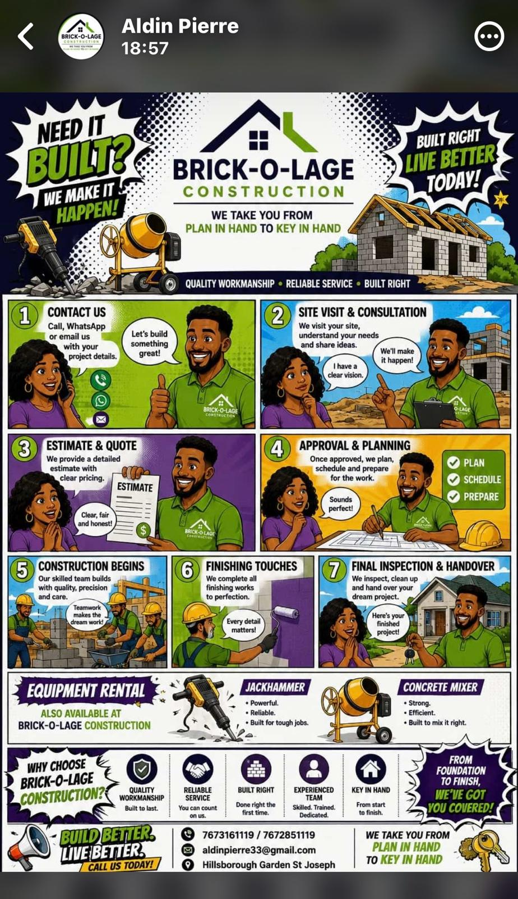

About Aldin & Brick‑O‑Lage
Brick‑O‑Lage Construction is led by Aldin Pierre, a Dominican builder based in Hillsborough Garden, St Joseph. With years of hands‑on experience, Aldin and his team take you from your first idea on paper to a finished home or project you can be proud of.
The company focuses on quality workmanship, reliable service, and clear communication. Whether you’re in Dominica or abroad planning a project back home, Aldin works with you step by step — site visits, estimates, planning, construction, finishing, and final handover.
